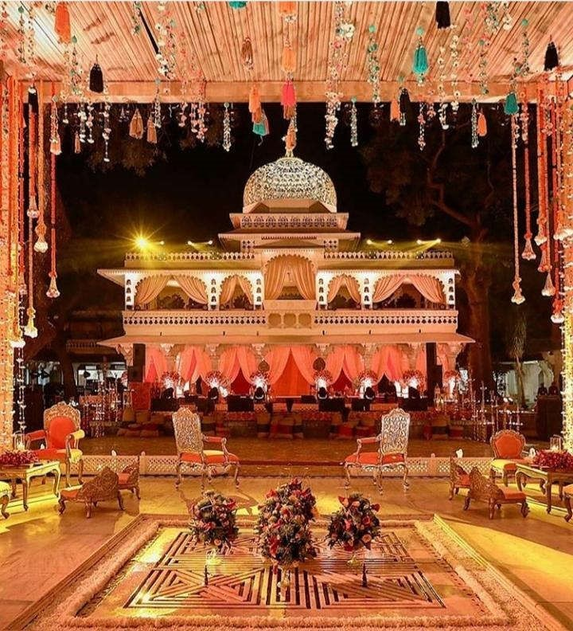
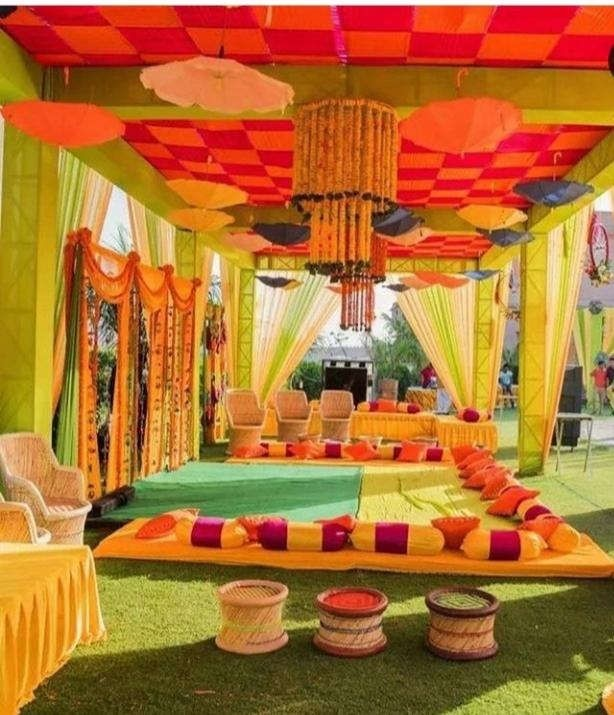
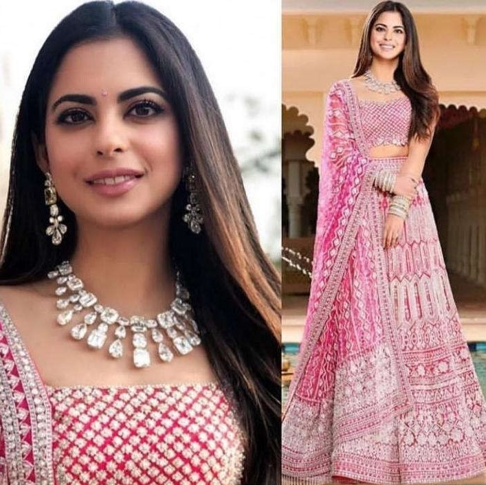
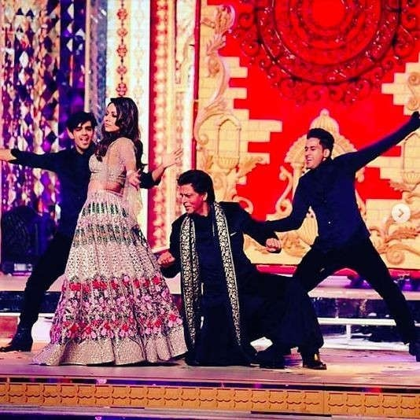
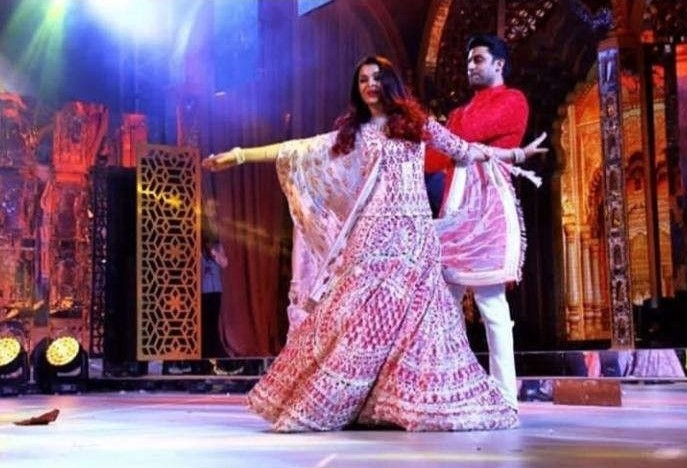
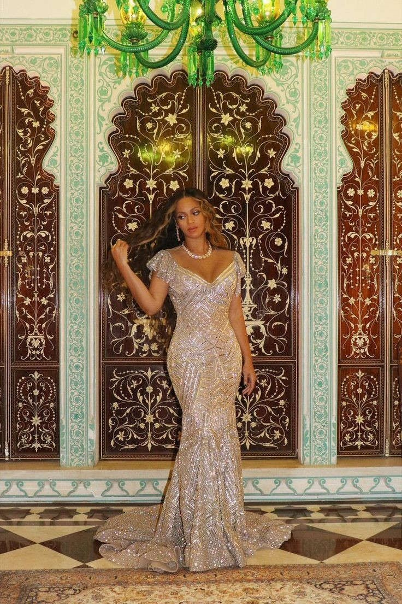

The Pre-wedding celebrations were set to be held in Udaipur.The Ambanis had booked several chartered flights for their guests from all over the world . The Maharana Pratap Airport in Udaipur witnessed a lot of activity because of the pre-wedding festivities. All five-star hotels in the city were booked for catering to the Ambanis' and Piramals' guests. The families also booked over a thousand luxury cars to ferry their guests to and from the Udaipur airport. The Udaipur festivities began with an Anna Seva, followed by a Maha Aarti on the banks of Lake Pichola, before taking to the stage at the sangeet ceremony.


The Pre-wedding celebrations started with the Sangeet ceremony. It was a sizzling affair of 2 days with celebrities in astounding attires.
Arijit Singh paid a tribute to Isha and Anand's love story by performing the best of his romantic tracks. This made way for the family sangeet, where the Ambanis and Piramals celebrated the union of their children with extravagant music and dance performances.

Isha Ambani wore a pink Manish Malhotra lehenga-choli and paired it with a diamond set for her extravagant sangeet.
The guest list of the Pre-wedding festivities included Priyanka Chopra, along with husband Nick Jonas, beloved Bollywood divas Vidya Balan, Karisma Kapoor, Raveena Tandon, Jacqueline Fernandez , who were seen at the ceremony in ravishing costumes. Karan Johar with mother Hiroo, Karisma Kapoor, Aishwarya Rai Bachchan and Abhishek Bachchan with daughter Aaradhya, Salman Khan and Katrina Kaif, Parineeti Chopra, John Abraham and wife Priya Runchal, Akshay Kumar, Jhanvi Kapoor with father Boney, Varun Dhawan, Aamir Khan and wife Kiran were present to bless the happy couple.
As per a Reliance Foundation initiative, the Ambanis had set up a Swadesh Bazaar in Udaipur, which displayed “108 traditional Indian Crafts and art forms from all different regions of the country for the national and international guestsâ€, thus kept Indian art crafts alive.Swadesh Bazaar is a unique concept initiated by Reliance Foundation to encourage the craftsmanship of traditional Indian artisans.

The entire Ambani family became the star of the Sangeet Evening. Kokilaben Ambani, Mukesh, Anil, Neeta, Tina, Akash, Anant was seen giving a dance performance together on stage.

Bollywood Badshah, Shah Rukh Khan and Gauri also gave the beautiful dance performances on this occasion. He took the limelight of the ceremony special with his performance.

Aishwarya Rai And Abhishek Bachchan danced on a romantic bollywood song, “Tere Bina†. The couple received applause for displaying their mesmerising chemistry.

Jacqueline Fernandez, Anil Kapoor and Sunita Kapoor, Kiara Advani, and Varun Dhawan are some other famous names who added even more glamour to the ceremony.
Shahrukh Khan and Aamir Khan shared the sangeet stage for a power packed performance and made the night even more memorable.

Katrina Kaif did a sizzling dance performance which set the stage on fire.

The very popular singer of Hollywood, Beyoncé gave a splendid performance at the function in Udaipur.

The Former First Lady of the United States and American politician, Hillary Clinton was present to give her blessings to the bride.

And many more guests have attended the event.